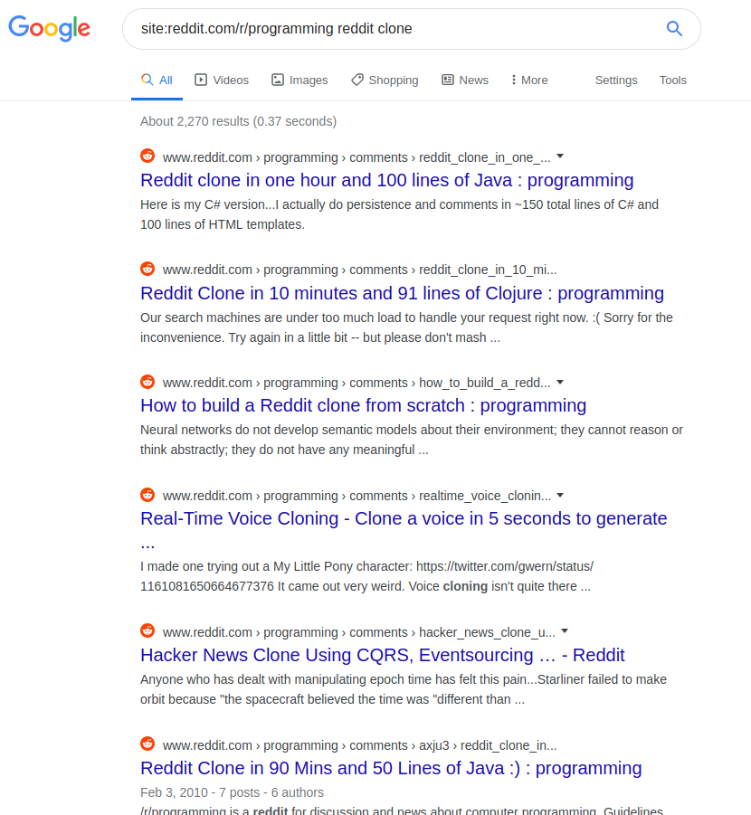
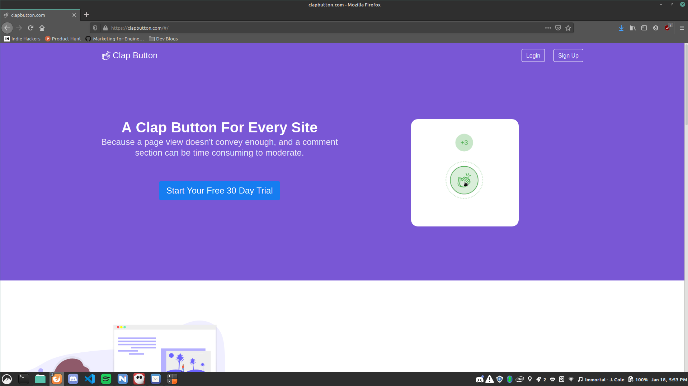

In the past ~12 months there's only been a couple weeks where I didn't have some kind of side project in the works. I'm just a very hands on person who loves working on projects and code feels like the perfect medium. Best of all it's almost free to produce and when you mess up you're not out a lot of money vs other hobbies like woodworking.
But code has been more than a hobby for me. It's what I went to college for and it's what landed me a developer position at a large corporation for 2 years. At that job though, I was very unhappy. It wasn't a bad company to work for, I just didn't enjoy corporate culture, the product, or the legacy codebase (most code originated before I was even born!).
That unhappiness is what drove me to start this journey of mine. I never actually dreamed of getting rich, I just desperately wanted something other than working the corporate grind 8AM to 4:30PM Monday to Friday with 2 hours of commuting each day.
And while I may have failed 3 times in the past year, and probably will continue to fail many more times I've learned a lot. Hell, starting 2019 I had never done any serious web dev, let alone used any of the technologies I learned.
Product 1 - MechanicLog
Enter product 1. This one began after I started spending too much time on HackerNews at work. I drank the Kool-Aid a little too hard and became convinced I could create a successful SaaS since HN said it was easy.
The idea was a website where users could log car repairs / maintenance, and track fuel mileage. I came up with the idea as I have a project car, and I often lose receipts for parts. I figured having a site where I could upload them would be the perfect place to save them in case I needed to return a part one day. Plus trying to remember when something was done and at what mileage isn't always easy.
Since I was hoping to make money from this project I knew I had to validate the idea a bit first. But I was afraid of carpet bombing various car forums to investigate if this would solve a problem others experienced so I decided to search for competitors already in the market.
Through searching around I found several promising competitors that all charged a bit for usage. This gave me some confidence as I figured if others could thrive then surely a new competitor could too. With some new found courage I decided it was time to get to work.
At the time I was fresh out of college and had no experience creating a website let alone one that required a backend but I was convinced I could make it happen. I can't find the exact date I started but I know development began shortly before the beginning of 2019 and I recall messing up the project so bad I nuked the git repo and restarted. Attempt 2 began January 7th 2019.
The tech stack for MechanicLog was as follows:
- A front end built using Vue and TypeScript
- A MySQL database
- A Node.js backend written in TypeScript and Express
- Deployed to a Ubuntu server via DigitalOcean
It should be mentioned that I had never actually written any TypeScript before this project. I came from the world of .NET thanks to lots of playing around in Unity and only knew a sprinkle of JavaScript at the time.
But I hacked away any spare moment I could get. During the week I'd wake up at 5AM so I could work on it until 7AM when I had to leave for work. Once I returned home from work and dinner was over I'd get back to work and continue on it from 6PM to 10PM or 11PM depending on how tired I was. Weekends were even better as I could spend over 8 hours a day on it.
This continued on with few days off until March 5th 2019. That was the day I released and deployed version 1.1. Why version 1.1? Because I “released” a version 1.0 on February 26th but being afraid it was too early to share I decided to continue on with development.

With the site released I figured it was time to market it. Thankfully I had totally thought of a marketing plan and how I would execute it /s. I had nothing, but after a lot of reading I decided I would try to market it by writing blog posts and building back links via Quora. I did manage to lay a few links down, and write some posts but it never amounted to much traffic.
During this time I added several more features to the site and eventually saw a couple users sign up for it but no one ever came back after their first login. I began to lose motivation with the project and decided I was done touching it with the last commit occurring on May 21st 2019.
Lessons Learned
-
There's no such thing as “If you build it, they will come”. By delaying the launch until version 1.1 and not do any marketing prior to launch I did nothing but waste my time trying to perfect the site for the non-existant hoard of users that would never come. It's not that I intended to put off marketing until the end, I was just bad at marketing and it would take me a long time to get any progress so it made me feel unproductive. I always crawled back to the code which was my safe space and made me feel better. “You'll do it tomorrow” I always said to myself but tomorrow never came.
-
If your only competitive edge is the fact that you built something yourself, you have no competitive edge. For example, one competitor had a mobile app that made their service much more useful, especially when logging fuel mileage. Apparently most users like to calculate their fuel mileage while sitting in their car directly after fueling up, and for some reason they don't like to bring a laptop with a wifi connection to the gas station.
-
Check your support email. Unfortunately I didn't learn this lesson until months later. During the launch of product 2 I decided it was time to shutdown MechanicLog so I could re-purpose the server for the next project. I also finally remembered that MechanicLog had a custom email for support and I had never once checked it. Guess who had several emails from people who tried to sign up but the site was broken? Turns out I pushed a change about a month after launch that broke the sign up system. Oops.
Product 2 - Updog
Being truthful, Updog started before MechanicLog but I realized I was out of my league when I first attempted it back in 2018. It was also called Blurtle back then. Updog was suppose to be a Reddit clone.
I should mention I spend a lot of time on Reddit. And like anyone else who browses Reddit a lot, I started to notice a trend of users saying Reddit was going to shit and that they wish there was a better alternative. I thought this was my calling. I knew (barely) enough to build a Reddit clone and I believed those Reddit users would surely love it.
Beginning on June 23rd 2019 this project went much faster than MechanicLog thanks to having some experience under my belt. It took about 3 months of work but the product was launched on September 25th 2019. I really thought it might take off.

The tech stack for Updog was as follows:
- A front end built using Vue and TypeScript
- A PostgreSQL database
- An ASP.NET Core Web API as the backend.
- Deployed to a Ubuntu server again via DigitalOcean
Proud to share off my amazing (to me) creation I took the plunge and decided to share it with r/programming.
It did not go well. In fact, it went so badly I deleted the post out of embarrassment. I can't imagine why though, it's not like anyone else has ever shared a Reddit clone there before.

Oh well, I ended up sharing it with the r/vuejs community where it was well received and made it to the front page. The code is open source and has gained 44 stars on GitHub at the time of writing this.
Lessons Learned
-
The killer feature required for a successor to Reddit has nothing to do with the website or the code powering it. It's the community.
-
A small section of any large online community will always claim the site has gone to shit but continue to use the site.
Product 3 - The Clap Button
Tired of over scoping my projects so hard I figured I should set my sights on something smaller. I can't remember how I thought of it but I thought making a micro SaaS that would enable static blogs to have a clap button similar to mediums would be pretty fly.
I never interviewed any potential users about if this would solve a problem they were experiencing with their blog. Instead, I validated the idea by finding a competitor that had a free version.
With my mind set on the idea I jumped in head first and created a nifty little clap button widget. I felt it was well polished, and even added missing features from the competitor such as the ability to hold click for rapid claps like on Medium. This took about 2 months of work to create (I had very little free time for it) but I did complete it and even open sourced it on GitHub.
With the button ready I whipped up a quick website for the dashboard portion of it and a basic landing page using up another 2 months of my free time. To help save some time I extracted out the core of the backend running Updog so I wouldn't have to replicate a ton of boilerplate code. That alone probably saved a month.
Deploying it took some time as I decided I wanted to learn how to create a continuous deployment pipeline using Jenkins and had to learn Docker to achieve it. But I did and sure enough number 3 was live on January 12th 2020.

Excited to share my new found creation, but not really sure who to share it with I decided on sharing it to HackerNews. Nervous, but curious what others might think I posted it up.
After 24 hours it received a staggering 3 points and 1 comment. The sole comment was on point saying it was a neat idea but it didn't justify charging for the service powering it. Instead of taking it as a challenge to add more functionality, I realized that it was a harsh truth but one I should have realized much sooner. The fact that Facebook doesn't charge to use their like button should have been a bit obvious.
Lessons Learned
-
A free alternative does not constitute as idea validation. Not every “solution” is worth paying for.
-
Cutting idea validation short to save time does not actually save time. You're opening yourself up to the possibility of wasting even more time developing a product no one will ever use.
Conclusion
In the past 12 months each product taught me several different lessons along the way. But there's one lesson that I've omitted but have been hinting at. It's a pretty important one too as had I learned it much sooner you probably wouldn't be reading this blog post. It's to properly validate your ideas.
Yeah it may have taken me three times to learn this but building something that may be paid for and used by others is something that requires you to wear a lot of hats. Some of which can be very uncomfortable for an introvert developer. It's easy to ignore the scary parts where you struggle and just do the stuff you enjoy while telling yourself it'll be okay there's always tomorrow.
Also I'm no longer working as a developer. I left the company back in May to start my own business doing auto detailing. I'm optimistic for 2020, and hope you enjoyed a laugh or two at my expense.